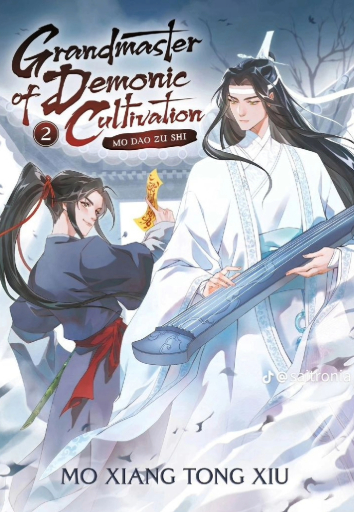

Lestor Omnisciente(Novela)
Un mundo donde la fantasía se fusiona con la realidad: así es como podemos describir, en un primer vistazo, esta fascinante obra. Llena de suspenso, supervivencia, caos y, sobre todo, momentos que harán que incluso el hombre más duro suelte algunas lágrimas. Todo esto nos sumerge en una historia tan intensa como inolvidable.
Nos remontamos a un mundo aparentemente normal, sin elementos extraordinarios. Allí conocemos a Dokja, un joven común que lucha día a día por salir adelante. Su vida carece de grandes aspiraciones, salvo una: seguir fielmente una novela titulada "Tres maneras de sobrevivir al apocalipsis". De la cual, durante casi diez años, Dokja ha sido su único lector aferrado a cada capítulo como si su vida dependiera de ello. Lo que parece una premisa sencilla da un giro inesperado cuando la humanidad entera se ve amenazada por criaturas aterradoras que desatan masacres sin piedad. Todo esto ocurre como parte de un retorcido espectáculo universal, presenciado por entidades divinas de otros mundos. En medio del caos, Dokja es el único que, gracias a su conocimiento de la novela (que ahora ha pasado a suceder en realidad), sabe lo que está por venir.
Cada personaje en esta historia cuenta con un desarrollo profundo y matices únicos. La narrativa está repleta de giros impredecibles y momentos que te dejarán sin aliento. Incluyendo un arte visual que eleva la experiencia, haciendo de esta lectura una travesía inolvidable.
Opinión Personal: Una gran obra, simplemente no se puede describir con palabras la cantidad de emociones que llegan a cruzar por tu mente con los distintos escenarios y giros argumentales. Desde el fondo de mi corazón la recomiendo con entusiasmo, especialmente a aquellas personas que aman las emociones intensas.
Por supuesto que, si eres un espectador más visual, este maravilloso relato también posee un formato manhwa, por si deseas darle un vistazo.
Más InformaciónLa Bendición del Oficial del Cielo(Novela)
Si el amor nació en algún lugar, definitivamente fue en esta novela. Es una de esas obras que te hacen enamorarte poco a poco, junto a sus protagonistas, en un mundo donde incluso el más leve aleteo de una mariposa posee un significado mucho más valioso.
Xie Lian es el príncipe heredero de una nación caída hace mucho tiempo. Marginado y desprestigiado, arrastra la fama de traer mala suerte a todos los que se cruzan en su camino, incluso a él mismo. Pero Xie Lian no es un ser humano común: puesto que es un dios que, contra todo pronóstico, ha logrado ascender por tercera vez a la corte celestial. Un hecho que ni él mismo esperaba, y que lo llevará a descubrir el verdadero significado de la felicidad.
Esta novela está llena de aventuras, romance, toques de comedia y una traición inesperada. Mezcla a la perfección la acción con un romance progresivo que, más allá de ser emocionante, es de aquellos que le dan calidez al corazón.
Opinión Personal: Un libro que me conmovió hasta las lágrimas, en especial su ultima entrega. Debido a la forma tan hermosa en la que se plasmó el amor entre los protagonistas, es decir, si ya se pensaba que ambos sentían un cariño intenso el uno por el otro definitivamente la trayectoria final es como una cachetada de amor en la cara. Solo puedo describirlo como una experiencia maravillosa, un género de literatura en el que empiezas y sabes que ya no habrá vuelta atrás.
Más InformaciónEl Maestro de la Cultivación Demoniaca(Novela)
¿Hasta dónde estarías dispuesto a llegar para proteger aquello que realmente amas? Aunque esta novela se desarrolla en un mundo lleno de acción y aventuras, es mucho más que eso puesto que si te detienes a observar las decisiones de cada personaje, descubrirás un mensaje profundo que atraviesa toda la historia.
Es un libro que, en palabras simples, “pega muy fuerte”. A lo largo del relato, se nos muestra cómo, incluso amando con todo el corazón, a veces hay que dejar ir aquello que más se quiere por un bien mayor. Wei Wuxian lo vivió en carne propia: perdió a su familia tres veces, y cargó con el estigma de ser un hombre malvado que caminaba por el sendero de la herejía, finalizando su vida con un destino que lo llevó a una muerte tan dolorosa como solitaria.
Pero no te dejes engañar por esa primera impresión, porque el final… es solo el comienzo. A partir de ahí, la historia florece con diálogos que te sacan una sonrisa, te dejan sin aliento o te hacen replantearte todo lo que creías saber. Mo Dao Zu Shi (El maestro de la cultivación demoníaca) no es solo un libro: es una experiencia que, llena de giros argumentales brillantes, te deja al final con la sensación de que cada detalle, por pequeño que parezca, fue planeado desde el principio.
Opinión Personal: Es de esos libros en los que no es necesario un beso o una muestra de amor físico para percibir el amor inherente, de verdad es tan conmovedor que de un momento a otro puedes simplemente estar recordando alguna escena y emocionarte tanto que las lagrimas corren por si solas. Desde mi experiencia la parte más fuerte es como se aborda los temas relacionados a la guerra y las consecuencias de esta, ciertamente te de mucho que pensar. Recomendado para los fanáticos de un romance de época con toques de acción.
Más Información